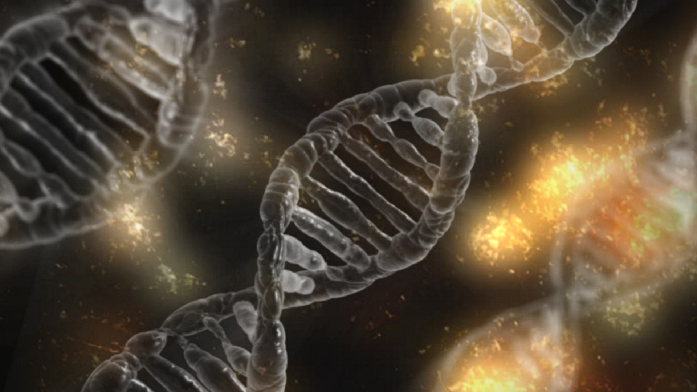

Quando estudamos Biologia no Ensino Médio (ou em cursinhos preparatórios para os vestibulares), podemos observar que a matéria é dividida em várias frentes e assuntos.
Cada um deles lida com tópicos variados, que têm maior ou menor incidência nas provas. A Bioquímica, sem dúvidas, é um dos temas que mais cai todos os anos no Enem e vestibulares.
Essa incrível área estuda a composição dos seres vivos, ou seja, observa quais são as moléculas que fazem parte da estrutura de nosso organismo e como elas interagem entre si para
formar as estruturas vitais de nosso corpo. Por isso, o seu estudo é importante não só para os vestibulares, mas para que possamos compreender melhor como funcionamos. 
O que é bioquímica Como mencionado no início de nosso bate-papo, a Bioquímica é a área que estuda as moléculas responsáveis pela vida. Por isso, ao longo de nosso estudo,
conheceremos partículas fundamentais para a vida, como a água, os sais minerais, os lipídios e os ácidos nucleicos.
De modo geral, as moléculas são divididas em compostos orgânicos (como é o caso, por exemplo, dos carboidratos) e inorgânicos, como a água.
Cada uma dessas substância tem funções específicas em nosso organismo, mas de certo modo todas elas estão completamente interligadas para que as reações metabólicas
possam ocorrer adequadamente.
QUER SABER MAIS? click no link